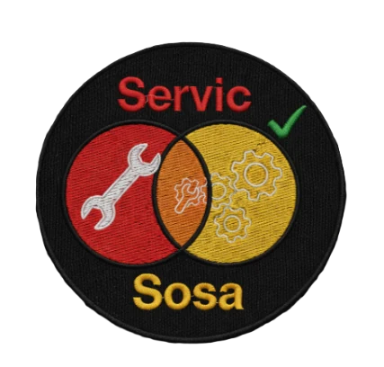

Reparación, mantenimiento y soporte técnico informático
Wanda, Misiones | Tel: 3757 587830 | WhatsApp
Diseñamos opciones específicas adaptadas a la demanda de hardware y al perfil de cada usuario:
Soporte físico preventivo básico. Incluye limpieza general de disipadores, remoción de polvo interno y reemplazo o instalación de componentes básicos que no requieran configuraciones complejas.
$15.000
No incluye repuestos
Orientado a computadoras del hogar o estudiantes con cargas de trabajo básicas, pero que presenten fallas lógicas o de sistema operativo moderadas. Optimización inicial y resolución de problemas frecuentes de lentitud.
$25.000
Soporte técnico integral
Para usuarios exigentes con flujos de trabajo avanzados (oficinas comerciales, desarrollo de software o diseño multimedia). Solución a fallas complejas de sistema, diagnóstico profundo de hardware y respaldo de datos críticos.
$40.000
Prioridad en tiempo de entrega
Soporte especializado para hardware demandante (jugadores, streamers y creadores de contenido). Mantenimiento térmico premium, calibración para máxima exigencia de recursos del procesador o la placa de video y asesoramiento técnico de optimización.
$55.000
Incluye pasta térmica premium
Un sistema bien armado le ahorra horas de trabajo por día a un negocio. Armamos programas sencillos, que se usan en la computadora del cliente, sin depender de internet y con los datos guardados en el propio equipo o en una copia de seguridad.
Para kioscos, almacenes y comercios. Registra cada venta, descuenta el stock automáticamente, guarda el total del día y emite ticket o comprobante. Pensado para trabajar con teclado numérico y sin conexión a internet.
ConsultarPara médicos, dentistas, veterinarios y otros profesionales de la salud. Agenda de turnos por día y por profesional, ficha de cada paciente con su historial y lista de espera que se actualiza sola.
ConsultarPara negocios con mercadería: entrada y salida de productos, aviso de stock mínimo, valorización del inventario y reporte de los artículos que más se venden.
ConsultarPara negocios que venden a crédito o a cuotas: registro de cada venta, control de vencimientos, lista de deudores y resumen mensual de lo cobrado.
ConsultarPara negocios con varias máquinas: armado y mantenimiento de la red WiFi, cuentas de usuario con permisos, copias de seguridad automáticas y plan de mantenimiento preventivo de todas las computadoras.
ConsultarPresencia en internet: catálogo de productos, formulario de pedidos, link directo a WhatsApp y publicación en Google para que te encuentren los clientes de la zona.
Consultar| Sistema | Para quién es | ¿Necesita internet? | Inversión |
|---|---|---|---|
| Cobro / punto de venta | Kioscos, almacenes, comercios | No | A cotizar |
| Turnos y fichas | Consultorios y profesionales de la salud | No (opcional para respaldar) | A cotizar |
| Stock e inventario | Negocios con mercadería | No | A cotizar |
| Facturación y cuentas a cobrar | Negocios que venden a crédito | No | A cotizar |
| Página web y catálogo | Cualquier negocio que quiera vender online | Sí | A cotizar |